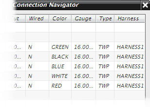

In the Electrical Connection Navigator, right-click and choose Properties.
In the Connection List Properties dialog box, click Edit Display Format.
Select Full and click OK twice.

Several other columns are added to the connection navigator.
Experiment with some of the other display formats.